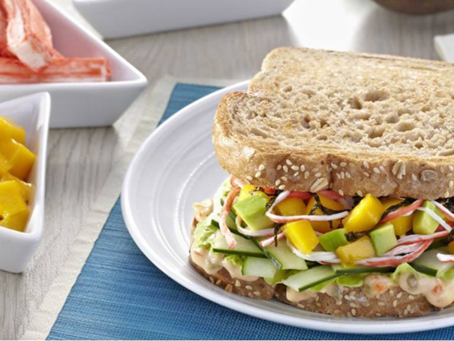

A place where recipes
& people meet
Welcome Back Members!
Thinking about what to cook next? Sign up now to get more recipe ideas, share your own dishes,
and find out what the rest of the community are making and eating!
Presenting our Recipes

Pork Chao Fan

California Maki Sandwich
5 Easy Dessert Recipe for you and your Family
1.Pork Chao Fan
Ingredients
2 pcs eggs, beaten
2 tbsp butter or margarine
1 small pc onion, chopped
4 cloves garlic, chopped
200 g ground pork
1 pc Knorr Pork Cube
1/2 tsp finely ground black pepper
1/4 cup oyster sauce
4 cups cold day-old rice, clumps broken apart
1/4 cup diced carrots
1/4 cup frozen peas
2 tbsp chopped green onions
Procedure
Heat oil in a pan and cook eggs. Set aside.
In the same pan, add butter and sauté onions and garlic.
Add ground pork and cook until lightly browned.
Add Knorr Pork Cube, pepper, and oyster sauce. Mix well.
Add rice and carrots. Toss and mix well. Cook for 3-5 minutes.
Add cooked eggs and break into pieces. Toss well.
Add peas and green onions. Serve warm
2. Ebi Tempura
Ingredients
12 pcs tiger prawns, peeled with tails intact
1 cup prepared pesto sauce
1 pc Knorr Shrimp Cube, mashed
1 cup crabmeat
1 cup flour, plus more for coating
1 cup cold water
1 pc whole egg, beaten
For the mayo-wasabi dip:
1 cup Lady's Choice Real Mayonnaise
1 tsp wasabi powder
1 tsp water
2 tsp rice vinegar
1 tbsp sesame oil
Procedure
In a bowl, crush the cookies and slice the mango into bite-sized chunks.
Mix the milk and cream in a smaller bowl until ingredients are well combined.
Assemble by alternating layers of crushed otap cookies, a drizzle of the milk mixture, mangoes, and a scoop of Selecta Super Thick Classic Vanilla ice cream in a glass.
Repeat the layering until the glass is filled, with the last layer being a scoop of ice cream garnished with crushed otap.
Serve immediately!
3. Seafood Paella
Ingredients
2 pcs Knorr Chicken Cubes
3 cups water
1 cup dry white wine
1 tsp saffron threads
2 (8-oz) bottles clam juice
For the herb blend:
1 cup chopped fresh parsley
1 tsp dried tarragon
2 cloves garlic, minced
For the paella:
1 tbsp olive oil
1/2 kg white-flesh fish fillet, cleaned and sliced into 1-inch pieces
1/2 kg jumbo shrimp (about 16 pcs), peeled and deveined with tails intact
2 cups finely chopped onion
1 cup finely chopped red bell pepper
1 cup canned diced tomatoes, undrained
1 tsp sweet paprika
Procedure
Combine all ingredients in a pot. Bring to a simmer but do not boil.
Make the herb blend: Combine all ingredients in a bowl. Set aside.
Make the paella: Heat oil in a paellera. Sauté fish and shrimp for 1 minute;. Remove from the pan and keep warm.
Sauté onion and bell pepper for 5 minutes. Add tomatoes, paprika, red pepper, and garlic. Add rice and stir for 1 minute.
Add warm broth, herb blend, and frozen peas. Bring to a boil, then cook for 10 minutes, stirring frequently.
Cook for 5 minutes or until the clams open. Discard any unopened shells.
Stir in seafood mixture. Arrange shrimp and pimiento slices on top of the rice. Cook for another 5 minutes.
Sprinkle lemon juice and remove from heat. Cover with a clean towel and let stand for 10 minutes. Serve hot.
4. Japanese Ramen
Ingredients
1/2 kg boneless pork shoulder, sliced thinly
1-2 pcs dried kombu (optional)
5 cups water
2 pcs Knorr Pork Cube
1 (2-inch) pc ginger, pounded
6 cloves garlic, crushed
3 tbsp sake
2 tbsp sesame oil
For the Ramen:
200 g ramen noodles, boiled and drained
sliced pork
nori
soft-boiled eggs
chopped spring onions
chili oil
Procedure
Make the broth: Combine pork, kombu, water, Knorr Pork Cubes, ginger, garlic, and sake in a pot. Bring to a boil. Lower heat and simmer until the meat is fork-tender.
Add sesame oil and season to taste. Remove from heat once the broth is fragrant.
Assemble the ramen: Divide noodles into bowls. Pour in hot broth. Garnish with pork, nori, eggs, spring onions, and chili oil. Serve immediately
5. California Maki Sandwich
Ingredients
2 tbsp Lady's Choice Tuna Spread
2 slices multigrain bread, toasted
4 pcs iceberg lettuce leaves
6 pcs crabsticks, sliced
1/4 cup diced ripe mango
1/4 cup thinly sliced cucumber
1/4 cup diced avocado (optional)
1 sheet nori, cut into thin strips
CONVERT
Procedure
Spread Lady’s Choice Tuna Spread on one side of the toasted bread.
Add lettuce, crabsticks, mangoes, cucumber, and avocado.
Top with chopped nori. Cover with the other toasted bread.